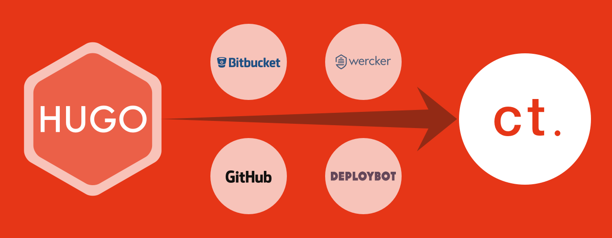

前編の「Hugoのセットアップからビルドするまで」の続きです。後編は、CIサービスを使ってデプロイを自動化するまでの内容でお届けします。
掲載しているスクリーンショットは、すでに設定済みのものを削除したり再設定したりしています。従って、はじめて設定する場合とは異なる場合がありますので、その辺りはよしなに補正をお願いします。
ビルドとデプロイ
「WordPressからHugoへ移行して、ビルドとデプロイを自動化した話」の通り、次のプロセスを経て公開するようにしています。
- ローカルで記事の作成やレイアウトなどの開発→適当にコミット
- 最終的な確認ができたらBitbucketのプライベートリポジトリへプッシュ
- Bitbucketへプッシュされたら、Werkerでデータをプルしてビルド
- ビルドが成功したら、そのデータをGitHubの公開リポジトリへデプロイ（プッシュ）
- GitHubへデプロイされたら、DEPLOYBOTでFTPSを使ってレンタルサーバーへデプロイ
ここからは、3〜5で使っているwerckerとDEPLOYBOTの設定について解説していきます。
進めるにあたり、BitbucketとGitHubへあらかじめリポジトリを作成しておきましょう。
werckerでApplicationを作成する
ヘッダーの「＋Create」から「Application」を選択して進めます。
画面が切り替わり、Choose a Git providerで、Bitbucketを選択します。
Bitbucketの認証画面が出てくると思いますので、内容を確認して［アクセスを許可する］ボタンをクリックします。
続いてSelect a repositoryに切り替わり、リポジトリの一覧が表示されます。使用するリポジトリを選択し、［Use selected repo］ボタンをクリックします。
Select ownerのセクションでは、オーナーを選択します。おそらく自分のアカウントしか表示されていないと思いますので、そのまま［Use selected owner］ボタンをクリックします。
Configure accessの項目ではデプロイキーの設定の仕方を選択します。おそらくややこしいことはしていないと思いますので、素直にrecommendedされている「Add the deploy key to the selected repository for me」を選択して、［Next step］ボタンを押します。
Setup your wercker.ymlでは、ここまでの内容を元にwerckerでの処理ステップを記述したwercker.ymlファイルの内容が生成されます。ただ、この内容は今回使いませんので、「Docker enabled. See our stacks documentation for more details.」にチェックを入れた状態で［Next step］ボタンをクリックします。
Awesome! you are all done!では、「Make my app public」のチェックを外した状態で［Finish］ボタンをクリックします。
デプロイキーを生成する
HugoでビルドしたのちにGitHubへデプロイするため、リポジトリへアクセスできるようにSSH Keyを生成・設定します。
設定が終わると、作成したアプリケーションのダッシュボードが表示されますので、右上の歯車アイコンをクリックし、設定画面へアクセスします。
左メニューのSSH Keysを選択し、［Generate new key pair］ボタンをクリックします。
［Name］へキーの名前を入力します。のちの設定で使うので、わかりやすい名前にしておきましょう。
［Generate］ボタンをクリックするとキーが生成されます。
デプロイする対象を設定する
続けて、左メニューのtargetsへアクセスしデプロイする対象を設定していきます。［Add deploy target］のプルダウンメニューから「custom deploy」を選択します。
Deploy target nameは、ターゲットの名前ですので、任意に設定します。Auto deployは、ビルドが成功すれば自動的にプッシュするオプションです。今回は、ウェブサイトのデプロイですし自動化をすることが主たる目的ですのでチェックを入れます。その下のテキストエリアには、ブランチ名を入力します。基本的にmasterブランチへプシュするので「master」と入力し［Save］ボタンをクリックします。
SaveできるとDeploy pipelineという項目が表示されますので、［Add new variable］ボタンをクリックして変数を追加します。
Environment variableへは変数名を入力します。今回は「GITHUB_DEPLOY_KEY」としました。
ラジオボタンはSSH Key pairを選択し、プルダウンメニューから先ほど生成したSSH Keyを選択します。
項目を入力したら［OK］ボタンで確定し、さらに［Save］ボタンもクリックしておきます。
GitHubのリポジトリへデプロイキーを設定する
GitHubへアクセスし、該当のリポジトリへアクセスします。右にあるSettingsメニューへアクセスします。
続いて左にあるDeploy Keyへアクセスします。
［Add deploy key］ボタンをクリックし、Titleへ適当な名前を、Keyへ先ほどコピーした内容をペーストし、書き込めるように「Allow write access」にチェックを入れて［Add key］ボタンをクリックします。
おそらくパスワードを聞かれるので、パスワードを入力すると追加されます。
wercker.ymlを作成する
ウェブで設定が完了したら、ローカルの作業へ戻ります。
ルートディレクトリへwercker.ymlを作成し、どのように動作させるのかを記述していきます。
動作を1つ1つ記述することも可能ですが、動作をまとめたパッケージとしてwercker自身や他のユーザーが作成・公開したものをRegistryで探すことができます。
その中から必要なものを組み合わせて作成したwercker.ymlはこんな感じです。
box: golang
build:
steps:
- arjen/hugo-build
deploy:
steps:
- leipert/add-ssh-key-gh-bb:
keyname: GITHUB_DEPLOY_KEY
- add-to-known_hosts:
hostname: github.com
- leipert/git-push:
host: github.com
repo: littlebusters/creative-tweet.net
basedir: public
clean_removed_files: true
boxは使用する仮想環境を指定します。今回は準備されているgolangのboxを使用しました（参考：boxの一覧）。
buildでは文字通りビルドの手順を記述していきます。Hugoのインストールからビルドまでを実行するarjen/hugo-buildを使っています。これはHugoのGitHubページへデプロイするまでを解説している、チュートリアルでも使われているステップです。
deployは、こちらも文字通りデプロイの手順を記述します。次の3つを使用しました。
leipert/add-ssh-key-gh-bbは、デプロイキーを登録add-to-known_hostsは、knownhostへgithub.comを登録leipert/git-pushは、git pushのための設定と実際のプッシュ
deployステップでは、それぞれにオプションを指定しています。
leipert/add-ssh-key-gh-bbでは、デプロイキーの名前をオプションで指定します。キー名は、targetsで設定した変数名を指定します。
add-to-known_hostsでは、SSHでアクセスするGithubのホスト名をオプション指定します。
leipert/git-pushでは、デプロイ（プッシュ）時のオプションを指定しています。basedirでプッシュするディレクトリを指定します。Hugoでビルドしたデータはpublicに格納されるためこれを指定しています。
一通り設定できたら、きちんと動作するかBitbucketへプッシュしてみましょう。プッシュできたら、werckerのApplication一覧からアクセスすれば進捗を確認できます。
DEPLOYBOTでレンタルサーバーへデプロイ
Dashboardへアクセスし、ハイライトされている「Connetct a repository」クリックします。
GitHubを選択し［Connect new account］ボタンをクリックします。
GitHubのAuthorize applicationというタイトルで、DeployBotのアクセスを許可するかどうか認証が入りますので、内容を確認して認証してください。
認証すると元の画面に戻りますので、プルダウンメニューからプル対象のリポジトリを選択します。下のTitle:へリポジトリ名が入力されるので、必要に応じて修正してください。
Color labelは、処理に関係ありませんので、適当に設定しましょう。
［Connect］ボタンをクリックし、Dashboardへ戻ります。
続いて「Create an environment」をクリックします。
General settingsのNameはデプロイ名ですので、どこにデプロイするとか動作がわかるようにしておくと良いでしょう。今回は「Push to Public」という名前にしました。
Deployment modeは、GitHubへプッシュされたら自動的にデプロイできるようにAutomaticを選択します。
解説していない項目はデフォルトのままでOKです。設定し終えたら［Save］ボタンをクリックします。
続いての「Add a new server」で何をするかを選択します。
今回はFTPSを用いてレンタルサーバーアップロードしますので、Filesの「FTP」を選択します。
画面が切り替わったら、サーバーアドレスやアカウント情報を入力します。
Nameはこの設定名です。
Hostは接続先のホスト名やIPアドレスを入力します。
Destination pathでは、デプロイするディレクトリを指定します。一般的には公開ディレクトリへのパスを指定します。
Loginはログインアカウント名を入力、Passwordはそのままパスワードを入力します。
他にもオプションを指定できますが、今回は使用しません（例えば「Trigger a webhook after deployment is done」を設定すれば、デプロイが完了したらSlackやGlipなどへポストすることもできます）。
設定ができたら［Save］ボタンをクリックします。
画面が切り替わると、今回設定した内容の一覧が表示されます。この中にFTPSの接続テスト結果があり、「Connection established」となっていれば接続が成功しています。
一通り眺めたら、左上のDashboardへ移動します。
「Ready to be deployed」のタイトルとともに［Deploy］ボタンが表示されていると思いますので、ボタンをクリックします。
続いて、デプロイのメモをつけたりやプレビューできたりといった画面に切り替わります。下の［Start deployment］ボタンをクリックすればデプロイ（アップロード）が始まります。
デプロイ中…
成功すればダッシュボードへログが残ります。
設定は以上です。
これでローカルからプッシュするだけで、あとはCIサービスがビルドからレンタルサーバーへのデプロイまでをやってくれるようになりました。
前回も書きましたが、ローカルでのバックアップはほぼ不要（元ファイルはGit管理外のため）で、ロールバックも簡単に行えます。
CMS自体のお守りからも解放されるので、余計な心配がかからなくなりました。
もちろん、サービスが落ちていたら使えないわけですから万能なわけではありませんが、そのリスクはどんなサービスを使っていても一緒ですね。